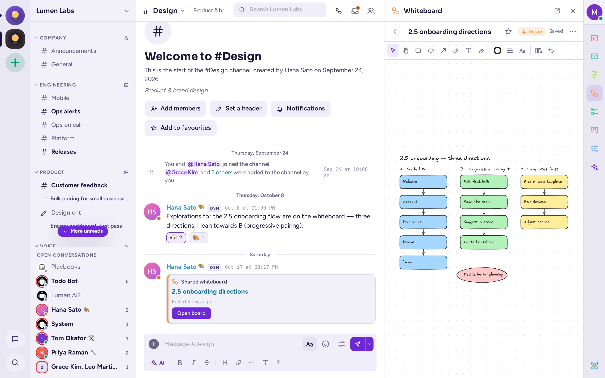
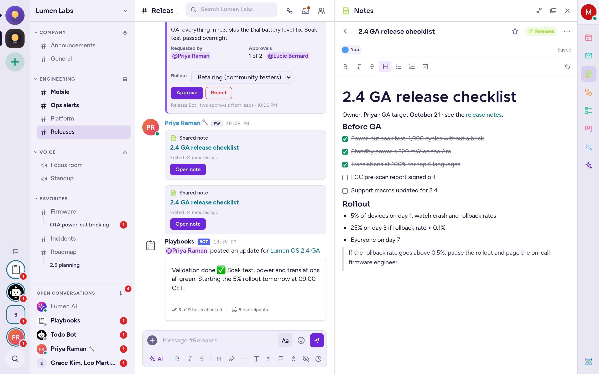
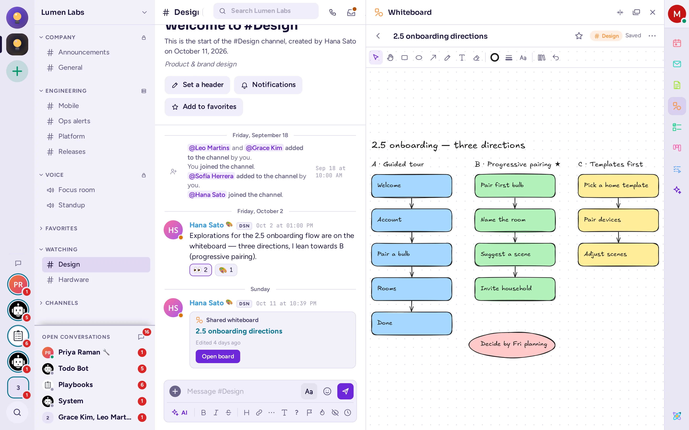
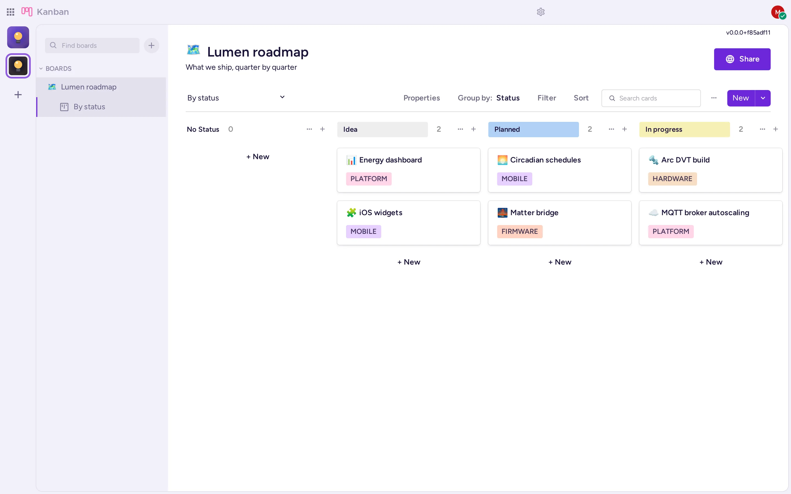
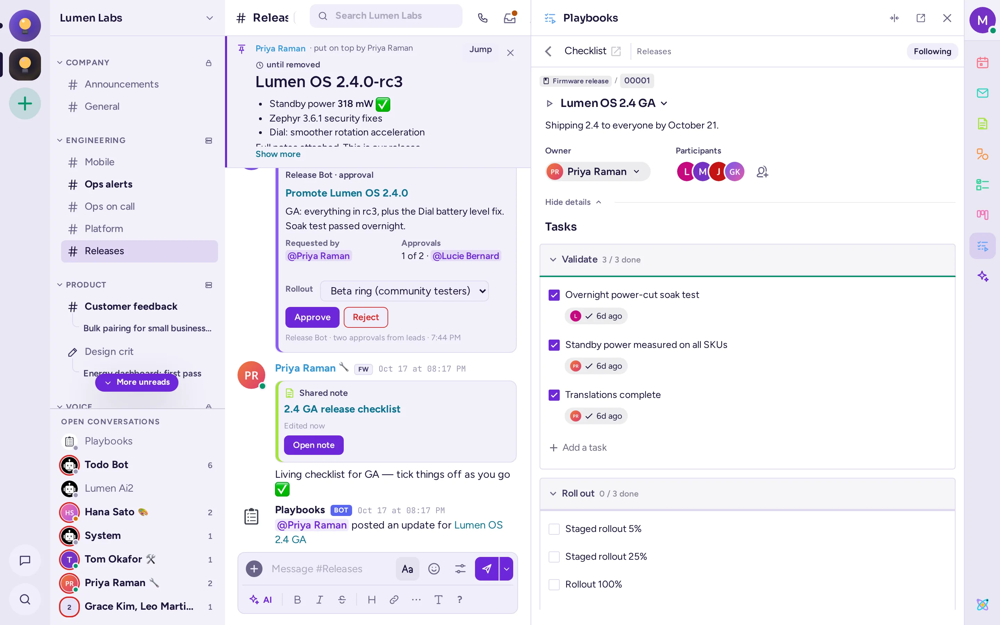

Les applications
Antimatter est livré avec des applications qui fonctionnent à côté des discussions : des notes et tableaux blancs que vous modifiez ensemble, des tableaux Kanban, votre calendrier et votre messagerie, des sondages, des listes de tâches et plus encore. Voici comment ouvrir chacune d’elles et à quoi elles servent.
Trouver et ouvrir les applications
Votre administrateur choisit les applications présentes sur votre serveur, il est donc possible que vous n’en voyiez pas toutes ici. La plupart des applications ont une icône dans la barre d’applications, la colonne étroite située sur le bord droit de la fenêtre, sous votre photo. Pointez sur une icône pour voir le nom de l’application, puis cliquez dessus pour l’ouvrir dans un panneau à côté de la conversation. Cliquez à nouveau pour fermer le panneau. Faites glisser le bord du panneau pour l’élargir ; Restaurer la largeur par défaut le remet à la taille initiale.

Les applications apparaissent également dans d’autres endroits :
- Le menu + de la zone de saisie du message (Ajouter un fichier et plus encore), par exemple Créer un sondage.
- Les onglets du sélecteur d’emoji : GIF, Autocollants et Mèmes.
- La section Actions du menu Plus d’actions d’un message, par exemple Ajouter à la liste de tâches ou Exécuter un playbook.
- Les commandes slash, telles que
/pollou/todo: tapez/pour afficher la liste. - Les pages complètes : Kanban et Playbooks sont répertoriés sous Produits dans le menu À propos d’Antimatter, en bas de la barre d’applications. Leur panneau comporte également un bouton Ouvrir en page entière.
- Les paramètres de certaines applications se trouvent sous Plugins dans vos paramètres.
Sur un téléphone, la barre d’applications se trouve dans un tiroir à droite : balayez vers la gauche, ou choisissez Plus › Membres et applications dans l’en-tête de la conversation.
Notes
Les notes sont des documents que plusieurs personnes modifient simultanément, à côté de la discussion. Vous voyez les curseurs et les noms des autres pendant qu’elles tapent, et tout est enregistré au fur et à mesure.

Écrire une note
- Cliquez sur Notes dans la barre d’applications.
- Choisissez un onglet : Ce canal pour une note que tous les membres du canal peuvent lire et modifier, ou Les miennes pour une note personnelle que seul vous pouvez voir.
- Cliquez sur + (Nouvelle note dans ce canal ou Nouvelle note personnelle). Une « Note sans titre » s’ouvre.
- Saisissez son titre, puis rédigez. La barre de Formattage propose le gras, l’italique, le barré, les titres, les listes et les listes de contrôle ; les liens, les citations et le code fonctionnent également. Tapez
@pour mentionner un membre du canal (les mentions dans les notes ne notifient personne). - Cliquez sur Toutes les notes pour revenir à la liste.
Lorsqu’une note d’un canal reçoit un titre, Antimatter publie « Note partagée » dans le canal, avec un bouton Ouvrir la note.
Plus avec une note
Étoilez une note pour la retrouver dans l’onglet Favoris. Le menu ⋯ de la note propose Partager dans le canal (publie une carte y faisant référence), Partager dans ~canal (transforme une note personnelle en note de canal, définitivement), Historique des versions (voir et Restaurer cette version), Exporter en Markdown et Supprimer. Seuls le créateur de la note et les administrateurs du canal peuvent supprimer une note de canal.
Tableau blanc
Un tableau blanc est un canevas sur lequel vous dessinez ensemble : formes, flèches, texte et dessin à main levée, avec les curseurs de chacun affichés en direct.

- Cliquez sur Tableau blanc dans la barre d’application.
- Comme pour les notes, choisissez Ce canal ou Les miennes, puis cliquez sur + (Nouveau tableau dans ce canal ou Nouveau tableau personnel).
- Dessinez avec les outils : Sélectionner et déplacer (V), Déplacer (H), Rectangle (R), Ellipse (O), Flèche (A), Dessiner (P), Texte (T) et Gomme (E). Choisissez les couleurs, les styles de ligne et les polices dans la barre d’outils, et les formes dans la Bibliothèque. Annuler (Ctrl+Z) annule votre dernière modification.
Le menu Actions du tableau contient Plein écran, Afficher tout le tableau, des téléchargements au format .excalidraw, PNG ou SVG, Historique des versions, Importer un fichier .excalidraw… (il remplace le tableau pour tout le monde), le partage dans le canal, et Supprimer. Les tableaux blancs restent sur votre serveur Antimatter.
Kanban
Les tableaux Kanban organisent le travail sous forme de cartes dans des colonnes, telles que « À faire », « En cours » et « Terminé ». Un tableau peut également être affiché sous forme de tableau, de galerie ou de calendrier.

Ouvrir les tableaux d’un canal
Cliquez sur Kanban dans la barre d’application. Le panneau liste les tableaux liés au canal ; cliquez sur l’un d’eux pour l’ouvrir. Si aucun n’est lié pour l’instant, cliquez sur Lier des tableaux à …, puis sur Lier à côté d’un tableau, ou sur Créer un tableau. Les membres du canal deviennent éditeurs d’un tableau lié.
Travailler avec un tableau
- Pour voir tous vos tableaux, ouvrez Kanban en page entière : Ouvrir en page entière dans le panneau, ou À propos d’Antimatter › Produits › Kanban.
- Pour créer un tableau, cliquez sur + Ajouter un tableau, puis partez d’un modèle (ordre du jour de réunion, tâches de projet, feuille de route, planificateur de sprint et autres) ou Créer un tableau vide.
- Cliquez sur + Nouveau dans une colonne pour ajouter une carte. Ouvrez une carte pour définir ses propriétés, ajouter du texte, des cases à cocher et des images, joindre des fichiers et commenter. Mentionner quelqu'un dans une carte l'en notifie.
- Faites glisser les cartes d'une colonne à l'autre. Utilisez Grouper par, Filtrer, Trier et Rechercher des cartes pour vous y retrouver, et Ajouter une vue pour une vue en tableau, galerie ou calendrier.
- Utilisez Partager sur un tableau pour choisir qui peut le voir ou le modifier.
Calendrier
L'application Calendrier affiche votre propre calendrier à côté des discussions, vous envoie des rappels et vous permet de vous réunir dans Antimatter. Elle fonctionne avec les serveurs de calendrier utilisant CalDAV, tels que Nextcloud, Fastmail ou Radicale.
Connecter votre calendrier
- Cliquez sur Calendrier dans la barre d'applications.
- Dans Connecter votre calendrier, saisissez l'adresse du serveur CalDAV (souvent simplement le domaine de votre fournisseur), votre Nom d'utilisateur et votre Mot de passe. Si votre fournisseur propose des mots de passe d'application, utilisez-en un.
- Choisissez quand m'envoyer des rappels pour les événements sans alarme, puis cliquez sur Connecter.
Votre mot de passe est stocké de manière chiffrée sur le serveur Antimatter. Pour modifier ces informations plus tard, ou pour vous déconnecter, utilisez Paramètres du compte dans le panneau.
L'utiliser
- Basculez entre Agenda et Semaine, naviguez avec Précédent, Aujourd'hui et Suivant, et cliquez sur l'étiquette d'un calendrier pour l'afficher ou le masquer.
- Cliquez sur Nouvel événement, remplissez le Titre, les champs Début et Fin, et éventuellement Répéter, Rappel, Lieu et Description, puis Enregistrer. Cliquez sur un événement pour le modifier ou le supprimer.
- Pour vous réunir dans Antimatter, définissez Se réunir dans Antimatter sur un canal ou un canal vocal, ou sur un appel, et sélectionnez le Canal. L'heure venue, l'événement affiche Démarrer un appel, Rejoindre l'appel ou Rejoindre.
- Les rappels arrivent sous forme de messages personnels du bot Calendrier, avec un lien pour rejoindre l'appel s'il y en a un.
L'application affiche vos propres calendriers ; elle n'envoie pas d'invitations à d'autres personnes.
Courriel
L'application Mail affiche votre boîte mail à côté des discussions, afin que vous puissiez lire, répondre et partager des e-mails sans quitter Antimatter.
Connecter votre boîte mail
- Cliquez sur Mail dans la barre d'applications.
- Si votre administrateur l'a configuré, cliquez sur Se connecter avec Google ou Se connecter avec Microsoft. Sinon, ou pour un autre fournisseur, saisissez votre Adresse e-mail et Votre nom, puis les serveurs Mail entrant (IMAP) et Mail sortant (SMTP), avec leur sécurité, port, nom d'utilisateur et mot de passe. Les pages d'aide de votre fournisseur fournissent ces détails.
- Cliquez sur Connecter.
L'utiliser
- Choisissez un Dossier, recherchez avec Rechercher dans ce dossier et cliquez sur un message pour le lire. Les images issues d’Internet sont masquées jusqu’à ce que vous cliquiez sur Afficher les images.
- Répondez avec Répondre, Répondre à tous ou Suivant, ou rédigez avec Nouveau message. Les messages sont en texte brut et vous ne pouvez pas joindre de nouveaux fichiers.
- Cliquez sur Partager dans un canal pour publier l’expéditeur, l’objet et un extrait d’un e-mail dans un canal, avec un commentaire.
Sondages
Un sondage pose une question dans une conversation et chacun vote d’un clic. Les résultats se mettent à jour en temps réel.
- Cliquez sur le + dans la zone de message et choisissez Créer un sondage, ou tapez
/poll. - Saisissez la Question et au moins deux réponses ; Ajouter une réponse en ajoute d’autres, jusqu’à dix.
- Activez Autoriser plusieurs réponses si les personnes peuvent en choisir plusieurs, et Vote anonyme si personne ne doit voir qui a voté pour quoi.
- Choisissez une Durée, de 1 heure à 1 semaine, ou Sans fin.
- Cliquez sur Publier le sondage.
Pour voter, cliquez sur une réponse ; cliquez à nouveau pour retirer votre vote. Le sondage se termine à la fin de sa durée, ou lorsque son créateur ou un admin du canal clique sur Fermer le sondage ; il affiche alors les Résultats finaux.
Vous pouvez également écrire un sondage complet sur une seule ligne : /poll "Lunch?" "Pizza" "Sushi" --multi --duration 1h. Tapez /poll help pour toutes les options.
À faire
À faire gère les listes de tâches : les vôtres, les listes partagées d’un canal, et les tâches que vous envoyez à d’autres personnes.
- Cliquez sur À faire dans la barre latérale. Dans l’onglet Ce canal, ajoutez une tâche à la liste partagée du canal et utilisez Assigner à… pour la confier à un membre. Étoilez la liste pour la suivre ; les listes que vous suivez sont regroupées dans l’onglet Suivi.
- L’onglet Les miennes contient vos propres tâches, celles qui vous sont assignées dans les canaux, et celles que vous envoyez ou que l’on vous envoie. Choisissez une personne avec Envoyer à… pour lui envoyer une tâche : elle peut l’Accepter, la Refuser ou la Marquer comme terminée.
- Pour transformer un message en tâche, choisissez Actions › Ajouter à à faire dans son menu.
- Cliquez sur Marquer comme terminée lorsqu’une tâche est achevée.
Vous pouvez aussi utiliser /todo add …, /todo list et /todo send @someone … pour vos tâches personnelles.
GIFs, autocollants et mèmes
Cliquez sur Emoji (la tête de smiley) dans la zone de message : lorsque ces applications sont configurées, le sélecteur comporte des onglets GIF, Stickers et Mèmes à côté de Emoji.
- GIF : recherchez ou parcourez les FAVORIS, les Récemment utilisés, les Tendances et les catégories. Cliquez sur un GIF pour l’envoyer immédiatement. Cliquez sur son étoile pour l’ajouter à vos favoris. Vous pouvez aussi taper
/gifsuivi de quelques mots. - Stickers : recherchez ou parcourez les packs de stickers, puis cliquez sur un sticker pour l’envoyer.
/stickerfonctionne aussi. - Mèmes : choisissez un modèle, remplissez ses textes dans Créer un mème, consultez l’aperçu, puis cliquez sur Publier le mème. Vous pouvez aussi taper
/meme, ou/meme helppour voir comment en écrire un en une ligne.
Selon les paramètres de votre serveur, vous pouvez ajouter vos propres GIF, stickers ou modèles de mèmes à l’aide du + situé à côté de la zone de recherche.
Playbooks
Un playbook est une liste de tâches réutilisable pour un travail qui suit les mêmes étapes à chaque fois : un incident, une mise en production, l’accueil d’un nouveau collègue. À chaque utilisation, vous lancez une Exécution, avec ses propres tâches, responsables, mises à jour de l’état et, à la fin, une rétrospective.

- Cliquez sur Playbooks dans la barre latérale pour voir les exécutions du canal actuel, en lancer une avec Lancer un playbook, ou créer une Nouvelle liste de tâches rapide.
- Pour créer ou modifier des playbooks, ouvrez la page complète : À propos d’Antimatter › Produits › Playbooks. Partez d’un modèle, comme une mise en production, la résolution d’un incident ou l’intégration d’un nouvel employé, ou d’un playbook vierge.
- Pour lancer une exécution, cliquez sur Exécution dans un playbook, donnez un nom et un résumé à l’exécution, choisissez de créer un canal pour elle ou de la lier à un canal existant, puis cliquez sur Démarrer l’exécution. Vous pouvez aussi choisir Actions › Lancer un playbook sur un message.
- Pendant une exécution, cochez les tâches, assignez-les et fixez des dates d’échéance, puis cliquez sur Publier une mise à jour pour informer tout le monde de l’avancement. Le responsable clique sur Terminer à la fin.
Tapez /playbook pour voir les commandes, telles que /playbook run ou /playbook update.
GitHub, GitLab et Jira
Ces applications connectent Antimatter aux outils utilisés par les développeurs. Votre administrateur doit d’abord les configurer. Ensuite :
- Connectez votre compte en tapant
/github connect,/gitlab connectou/jira connect, puis suivez le lien et connectez-vous sur ce site. Pour GitLab, effectuez cette opération dans un navigateur web, et non dans l’application de bureau. - Vous recevrez ensuite des messages personnels lorsque quelqu’un vous mentionne, vous demande une relecture ou vous assigne une tâche.
- Pour qu'un canal suive un dépôt ou un projet, utilisez
/github subscriptions add owner/repo,/gitlab subscriptions add group/projectou/jira subscribe. - Pour créer ou attacher un ticket depuis un message, choisissez Create GitHub Issue, Create GitLab Issue, Create Jira Issue ou l'élément correspondant Attach to … dans les Actions du message.
Tapez /github help, /gitlab help ou /jira help pour afficher toutes leurs commandes.
Applications dans l'application mobile
L'application mobile permet de créer et de voter dans des sondages, d'envoyer des GIF et des autocollants, et de répondre aux tâches qui vous sont envoyées. Les notes et les tableaux blancs s'ouvrent dans une fenêtre de navigateur au sein de l'application. Kanban, Calendrier, Mail et les mèmes ne sont pas encore disponibles dans l'application mobile : utilisez l'application web ou de bureau pour cela.